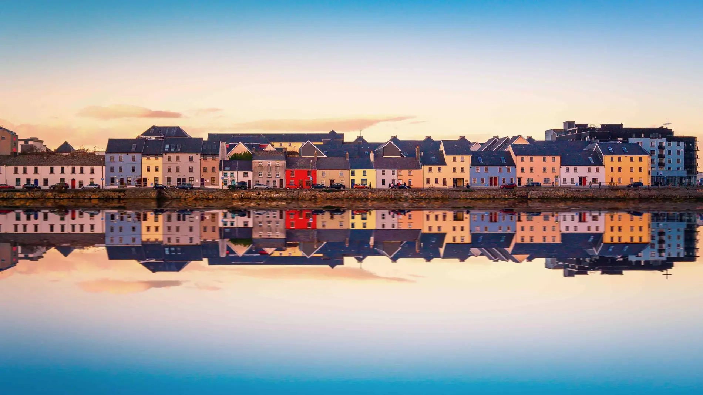
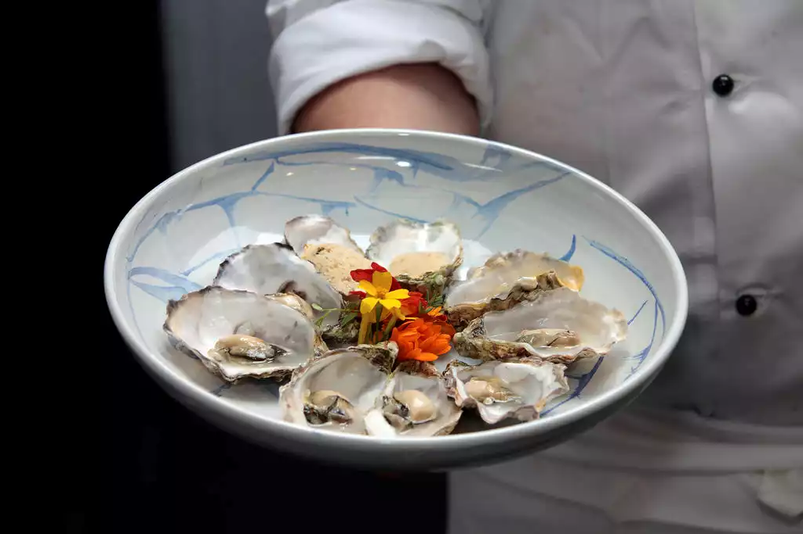
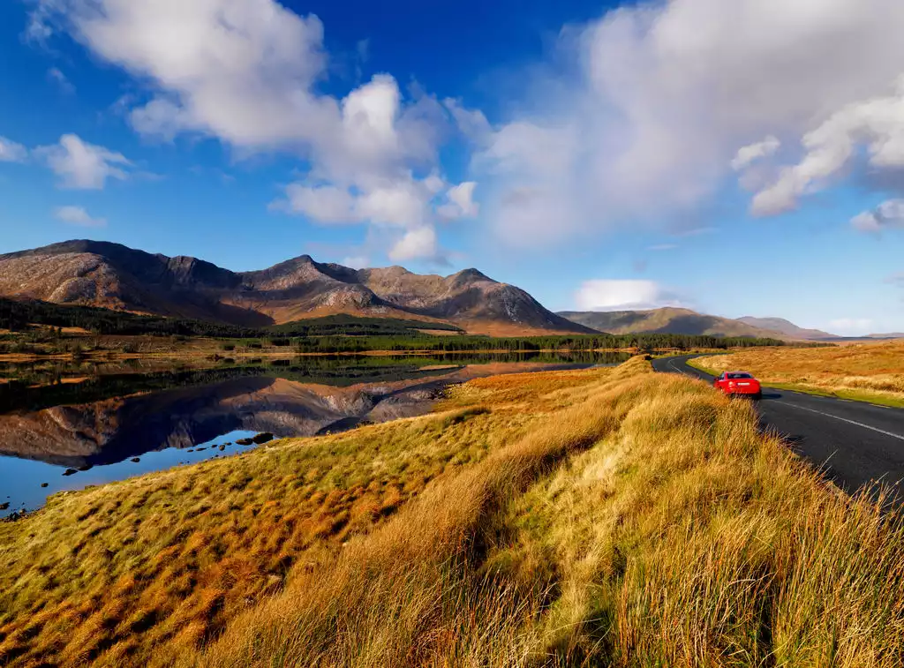
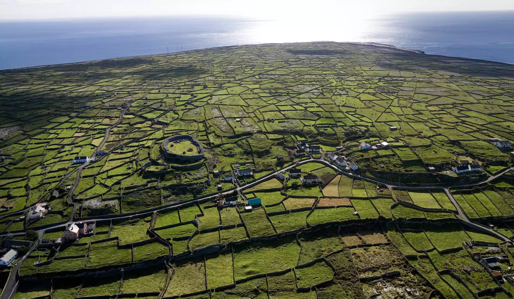

Galway
Esta ciudad portuaria de la Ruta Costera del Atlántico tiene un rico pasado medieval. Hoy es un animado centro rebosante de pubs tradicionales, calles coloridas y el encanto de la costa oeste.
Puro encanto del oeste
Nadie puede resistirse a Galway, una ciudad bohemia, agradable y amante de la música tradicional. El espíritu de la costa oeste de Irlanda se siente en sus animadas calles, desde tranquilos pubs antiguos que ofrecen un buen fuego y rincones acogedores, hasta tiendas que venden anillos de Claddagh, jerséis tipo Aran y tallas de madera de roble. A la vuelta de la esquina, encontrarás chefs innovadores con una pasión por los ingredientes locales, tiendas de diseño elegantes, música callejera animada y una escena cinematográfica muy activa (Galway es Ciudad del Cine de la UNESCO). Visita Galway durante uno de sus famosos festivales, como el Festival de la Ostra, el Festival de Arte o el Festival de Cine, y comprobarás que toda la ciudad parece una gran fiesta. Pero también puedes disfrutar de muchos momentos tranquilos en esta joya medieval. Pasea por callejuelas antiguas, recorre el paseo marítimo hasta el pueblo costero de Salthill o cruza uno de los cuatro puentes del río Corrib. En cualquier caso, quédate un tiempo. No te arrepentirás.
Una cálida bienvenida
En Galway, todo gira en torno a los ingredientes locales. Descubre qué inspira a Jess Murphy, chef jefe en Kai Café and Restaurant.
En plena naturaleza: más allá de la ciudad
Olas rompientes, ammophilas balanceantes, murallas antiguas que cruzan campos y arenas blancas brillantes, la ciudad de Galway es la puerta de acceso a algunos de los paisajes más increíbles de la isla de Irlanda. Visita Connemara para empezar. Esta romántica región, descrita por Oscar Wilde como un lugar de “belleza salvaje”, llega al alma con sus pubs con aroma a madera, colinas color tabaco, ponis autóctonos y playas de coral. O disfruta de la vida al límite con un viaje a las islas Aran. Famosas por su intensa historia literaria, cultura tradicional, paisajes rocosos e imponentes acantilados, las tres islas ofrecen una visión única de un modo de vida determinado por el océano Atlántico.
Las islas Aran
Las islas Aran (Inis Mór, Inis Meáin e Inis Oírr) se encuentran a 48 km de la bahía de Galway y se trata del territorio más occidental antes de llegar a América. Famosas por sus paisajes naturales, típicos jerséis de punto y bonitas casas rurales, las islas Aran, de habla irlandesa, maravillan a todo aquel que las visita. Estas tres islas han conservado la cultura y el legado de la vida tradicional irlandesa, y fascinan a los miles de visitantes que reciben cada año. Las imágenes de las islas se reconocen inmediatamente gracias a su paisaje entrecruzado con muros de piedra, una característica tradicional del oeste de Irlanda. Las islas Aran han servido de inspiración a un sinfín de autores, poetas y artistas a lo largo de los siglos, y muchos visitantes llegan aquí en busca de un refugio para conectar con la Irlanda auténtica y rural. Las tres islas son comunidades de habla irlandesa, pero los residentes son bilingües y el inglés es su segundo idioma.
¿A dónde querés viajar ahora?
Buscá ciudades, consejos o destinos de Irlanda